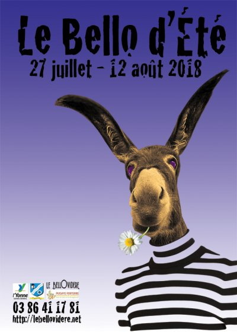

{kind=link}

Le Bello d’Été 2018
Soudain surgit deux...
Surprenant surgissements du dessous...
Vapeurs puissantes et évocatrices... De l’un l’autre.
Deux dans un corps, eux dans une âme, ensembles dans un même. Ou bien autrement.
La force s’accumule et s’associe, se multiplie.
À force de... par arrivées successives... par des retours ou un départ potentiel...
Parfois elle est destructrice, parfois instructrice...
Elle est maîtresse incontrôlable, dévorante ou séductrice, religieuse ou à dents longues.
Sous son empire, le sang circule ou coagule.
Le temps s’arrête ou bien défile.
La mode varie. Le point de vue aussi.
Soudain surgit deux.
L’un dans l’autre. Inside. Deux faces d’un même. Sur la face du lien.
Ils cohabitent sans fards. Ils jouent des deux côtés. Ils sont un.
Un un à deux. Un deux dans son double.
Étages et superpositions.
Vision pure et floue d’un parallèle. Une autre manière de voir.
Une transcendance implantée.
Un ajout présent.
Une acceptation simplissime...
Soudain surgit deux. C’est évident.
Il n’y a pas de calculs ou de suppositions. Ça enfile, ça tiens la corde parfaitement... Sans concurrence aucune.
C’est primordial, primaire... lumineux.
Ça éclaire comme toujours.
Le Bello d’Été 2018
du 27 juillet au 12 août
{kind=link}
Cathy Heiting Trio
vendredi 27 juillet à 21h
samedi 28 juillet à 21h
Plusieurs années après avoir enflammé Le Bello avec son « Bizet était une Femme » et son « Opéra Molotov », Cathy Heiting revient enfin !
Chanteuse hybride à l’éclectisme assumé, elle invite Wim Welker à la guitare et Guilhaume Renard à la contrebasse pour un tour de chant jazzy comme elle les aime…
L’humour, parfois décapant, chevillé à la beauté de sa voix d’opéra, elle brode un répertoire de grands standards de jazz côtoyant un savant choix de morceaux soul.
« Cathy Heiting, c’est le miel mélangé à du Tabasco, une artiste pétrie de talent, d’humour et d’humanité ». France Net Infos
{kind=link}
Exposition Lampesque
Vernissage festif le dimanche 29 juillet à 19h
Pendant toute la durée du festival, retrouvez l’exposition des lampes de Nicolas dans la petite salle...
Le dimanche 29 juillet à 19h, on vous propose d’amener vos yeux avec de quoi partager à manger… On offre un verre et on s’occupe de l’exposition et de l’ambiance !
Participation libre
{kind=link}
Grise Cornac
jeudi 2 août à 21h
vendredi 3 août à 21h
Grise Cornac est un duo complice et lumineux qui dessine ses chansons avec un savant mélange de force et de délicatesse.
Ils nous entraînent dans le vaste labyrinthe du noir sans sommeil et nous guident dans les méandres des songes sous la lune…
La belle voix éraillée de Grise répondant aux cordes de Cornac à la guitare et au violoncelle… Une très belle découverte !
« On comparerait facilement aux moments les plus poétiques du duo Fontaine-Areski ou bien à Lhasa… » Le Yety
{kind=link}
Tout un Monde
jeudi 9 août à 21h
vendredi 10 août à 21h
Retour d’un des spectacles qui a marqué l’histoire du Bello…
Demandez à une clown de vous raconter Cendrillon… Elle voudra faire des parenthèses, elle voudra faire des digressions et surtout elle voudra faire des révélations !
Elle vous dira que dans la vraie histoire, Cendrillon n’a pas écouté, qu’elle s’est enfuie, qu’il lui est arrivé toutes sortes de choses étranges…
Un spectacle magnifique de et avec Hélène Ventoura !
« C’est drôle, décalé, moderne, insolite. Et pas du tout pour les enfants. » Stéphanie Barioz, Télérama (TT)
{kind=link}
Le Cabaret de Trop…
samedi 11 août à 21h
dimanche 12 août à 21h
Carte blanche à deux compagnies toulousaines fidèles du Bello ! Le Bestiaire à Pampilles et La Compagnie de l’Autre…
Les comparses nous concoctent une soirée spéciale qui promet… Un cabaret avec un grand Cas !
Un spectacle plein de tracas à avaler et de rebondissements à digérer. Un délire aux forts accents clownesques et musicaux pour une double clôture en folie douce partagée.
avec Jo Dahan (La Mano Negra, Les Wampas), Lydie Le Doeuff, Alexandre Bordier, Frederic Sechet, Sigrid Bordier, France Cartigny et Alexis Delmastro.